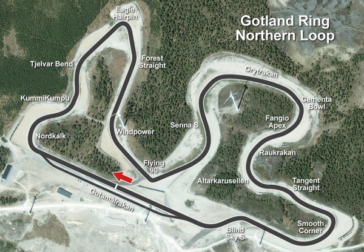

Koenigsegg Agera rs
O Koenigsegg Agera RS é um supercarro sueco que personifica o que há de mais avançado em termos de engenharia automotiva e desempenho extremo. Fabricado pela renomada fabricante de automóveis de alto desempenho, a Koenigsegg, o Agera RS é uma obra-prima que combina design elegante com uma potência avassaladora.
O design do Agera RS não é apenas funcional, mas também esteticamente impactante. Linhas fluidas e detalhes aerodinâmicos se combinam para criar uma presença visual imponente. O interior, por sua vez, oferece uma fusão de luxo e esportividade, com materiais de alta qualidade e uma atenção meticulosa aos detalhes.

fonte da imagem: wikipedia
Motor
Equipado com um motor V8 biturbo de 5.0 litros, o Agera RS é capaz de produzir uma impressionante potência que ultrapassa os 1.000 cavalos. Isso, aliado a um chassi leve e aerodinâmica refinada, permite que o carro atinja velocidades incríveis em questão de segundos. A busca incessante pela excelência em termos de peso e desempenho levou a Koenigsegg a utilizar materiais de alta tecnologia, como fibra de carbono e titânio, na construção do veículo.
Uma das características mais notáveis do Agera RS é o seu foco na velocidade. Em 2017, o modelo estabeleceu o recorde de carro de produção mais rápido do mundo, atingindo uma velocidade média de 447 km/h em uma rodovia no deserto de Nevada, nos Estados Unidos. Esse feito reforça a reputação da Koenigsegg como uma das principais fabricantes de carros de alto desempenho do planeta.
Em suma, o Koenigsegg Agera RS é mais do que um simples meio de transporte; é uma obra-prima da engenharia automotiva que representa a busca incessante pela excelência e pela emoção de dirigir. Seu desempenho surpreendente e design impressionante tornam-no um ícone entre os entusiastas de carros de alto desempenho em todo o mundo.
Koenigsegg Regera
O Koenigsegg Regera, lançado em 2016, é uma obra-prima de engenharia da fabricante sueca de carros esportivos de alto desempenho. Este supercarro híbrido plug-in é uma expressão de luxo, inovação e potência extrema.
O design do Regera é uma mistura de elegância e aerodinâmica funcional. Com linhas fluídas e detalhes precisos, o carro não apenas impressiona visualmente, mas também é otimizado para oferecer eficiência aerodinâmica e estabilidade em altas velocidades.
O interior do Regera é um exemplo de artesanato de alta qualidade, combinando materiais luxuosos e tecnologia de ponta. Os ocupantes desfrutam de um ambiente refinado, repleto de recursos modernos, enquanto o carro demonstra seu desempenho impressionante.
fonte da imagem: wikipedia
Motor
No coração do Regera, encontra-se um sistema de propulsão que combina um motor V8 biturbo de 5.0 litros com três motores elétricos, resultando em uma potência combinada que supera incríveis 1.500 cavalos. A transmissão direta inovadora da Koenigsegg, conhecida como Koenigsegg Direct Drive (KDD), elimina a necessidade de uma caixa de câmbio tradicional, proporcionando uma aceleração suave e contínua.
Recorde 0-400km/h-0
Em sueco, “Regera”, significa “Reinar” e o Koenigsegg Regera é novamente o Rei da aceleração e travagem dos 0-400-0 km/h. Quatro anos depois de ter registado um valor de 31,49s, o Koenigsegg Regera desceu a fasquia para os 28,81s. E se, tal como nós, está a pensar quais foram as diferenças efetuadas, a Koenigsegg revela que foram mais simples do que pode pensar. O construtor revelou que tudo se resumiu a um novo conjunto de pneus Michelin Pilot Sport Cup 2R e a uma pista mais lisa. Veja o vídeo.
koenigsegg Jesko Attack
O Koenigsegg Jesko é um supercarro sueco que impressiona tanto em design quanto em desempenho. Seu motor V8 biturbo de 5.0 litros produz uma potência extraordinária de até 1.600 cavalos, tornando-o uma máquina incrivelmente potente. A transmissão Koenigsegg Light Speed Transmission (LST) de nove velocidades e a aerodinâmica ativa contribuem para um desempenho excepcional em diversas condições de condução.
Construído com materiais leves, como fibra de carbono, o Jesko possui uma estrutura rígida e um chassi avançado. Sua suspensão ativa oferece ajustes dinâmicos, melhorando a dirigibilidade. O interior é luxuoso, enfatizando o conforto do motorista e a personalização, enquanto a produção limitada adiciona exclusividade ao modelo.
O nome Jesko é uma homenagem ao pai do fundador da Koenigsegg. Com um preço elevado e disponibilidade limitada, o Jesko é uma obra-prima automotiva destinada a entusiastas ricos que buscam exclusividade e desempenho extraordinário em um supercarro.
fonte da imagem: wikipedia
Gotlang Ring
Gotland Ring é a primeira pista de corrida sustentável e local de treinamento de pilotos do mundo. A pista de corrida premium e instalação multifuncional de automobilismo em Kappelshamn, na ilha sueca de Gotland, a estância turística mais popular da Suécia, está localizada em um município ecológico.
O circuito, desenhado pelo fundador e empreendedor social e ambiental Alec Arho Havrén, foi inspecionado pela FIA para corridas em junho de 2009. No entanto, a educação corporativa e os testes são o foco principal, mesmo no futuro. Em seu formato final – com perfil de circuito principal de 28 km – Gotland Ring se tornará o autódromo mais longo do mundo.
Lançamentos de novos modelos da indústria automotiva internacional têm sido organizados no Gotland Ring desde 2007. Gotland Ring é considerado a única pista de corrida e teste sustentável do mundo - daí a escolha de um lançamento pan-europeu do Honda FCX movido a hidrogênio em junho de 2007. Durante Outubro-novembro de 2007, a BMW estreou sua nova tecnologia Efficient Dynamics em conjunto com a introdução do 135i Coupe no Gotland Ring.
No futuro, seis circuitos separados – totalizando 28 km – permitirão uma utilização flexível da instalação; testes simultâneos e eventos corporativos podem ser executados em diferentes partes do extenso complexo. Especialistas em circuito e campeões de corridas já consideram o perfil operacional do Gotland Ring, agora existente, como um dos mais exigentes e emocionantes do mundo.
A partir de hoje, a pista se estende por 3,2 km no Loop Norte e será classificada pela FIA e estará pronta para corrida na primavera de 2009. Modernas barreiras de aço da FIA estão instaladas ao redor de todo o circuito e a pista foi certificada para corridas. Junho de 2009.
A segunda entidade completa - o Southern Loop - está em desenvolvimento pré-construção e está pronta para instalação em asfalto durante 2015. As vastas áreas disponíveis para Gotland Ring permitem um parque educacional completo, um campus de negócios ecológico e um centro de automobilismo e lazer para expansão futura. . No seu formato final (após 2017), todo o sistema de vias de aproximadamente 28 km está previsto para se estender por uma área aproximada de 200 ha. Um campus empresarial verde, um centro de mobilidade elétrica e um resort ecológico estão sendo planejados em conjunto com o Gotland Ring. 
Fonte da imagem : myracingcareer
O fundador e principal parceiro - Alec Arho Havrén - é o arquiteto do perfil da pista e a força motriz por trás do desenvolvimento do campus de negócios verdes e de um sistema de energia inteligente para estradas e tráfego que muda o paradigma, uma microrrede inteligente de coleta de energia com carregamento indutivo sem fio e móvel para veículos elétricos.
Nordkalk – o maior produtor de calcário do Norte da Europa – é o principal patrocinador e parceiro facilitador do Gotland Ring.
Recorde
O Koenigsegg Jesko completou a volta em 2 minutos e 56,97 segundos. Comparando esta conquista com a volta mais rápida anterior em Gotland Ring, registrada em 3 minutos e 04,83 segundos com um Porsche GT3RS MR, destaca o desempenho notável de Jesko.